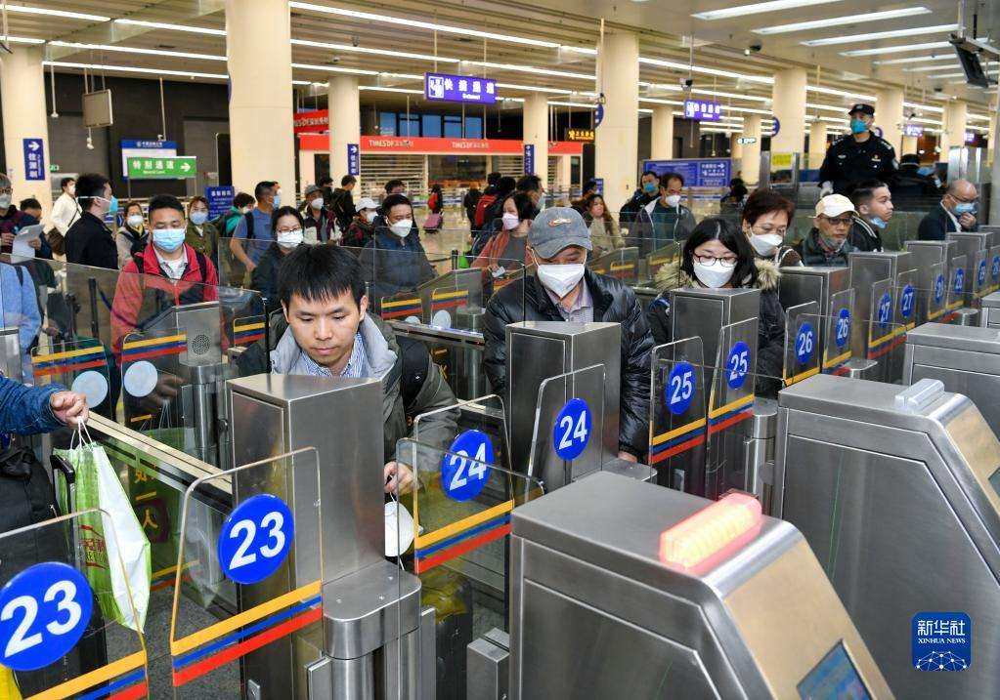

Milestone Brief
No Milestone Selected
Select any node above to get the key narrative and guidance without sacrificing chart visibility.
Visual Insight

The directional shift is not a short-term fluctuation, but a rewriting of the dual-city living radius.
Select any node above to get the key narrative and guidance without sacrificing chart visibility.
